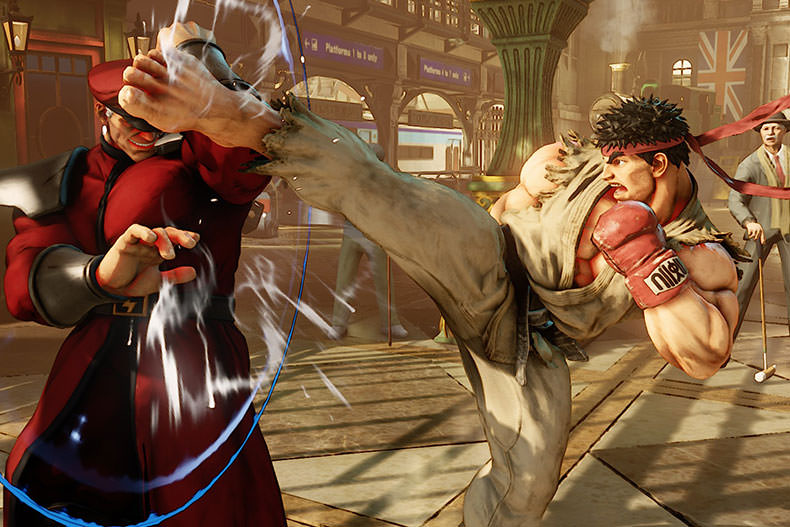

combat
tekken
هیهاچی میشیما، مالک قدرتمند و ظالم میشیما زایباتسو، ناقوس مسابقات قهرمانی مشتآهنین را به صدا درآورد، یک مسابقهٔ مبارزهای همراه با جایزهٔ هزار میلیون دلاری. در این تورنومنت هشت مبارز با هم به رقابت میپردازند و یکی از آنها قهرمان شکستناپذیر جهان که فقط برای انتقام گرفتن از هیهاچی وارده این مسابقات شده بود و جایزه برای او اهمیتی نداشت. نام این مرد کازویا میشیما، پسر هیهاچی بود. هنگامی که کازویا تنها پنج سال داشت، پدرش او را از صخرهای به پایین انداخت تا ببیند آیا کازویا واقعاً پسر او هست یا نه (این بستگی به توانایی کازویا داشت که آیا از افتادن جان سالم به در میبرد و از صخره بالا میآمد یا خیر). در حقیقت کازویا جان سالم به در برد، اما یک زخم عمیق بر روی سینهٔ او پدیدار شده بود که به آرامی جان او را میگرفت. شیطان جلوی کازویا پدیدارشد، و به او پیشنهاد فرصتی داد تا در ازای گرفتن روح او، قدرت خود را بازپس گرفته و انتقام خود را از هیهاچی بگیرد. کازویا پر از خشم و نفرت، این پیشنهاد را قبول کرد.
تورنومنت قهرمانی مشتآهنین بیست و یک سال بعد از این ماجرا آغاز شد، و هماکنون کازویا تبدیل به یک قهرمان شکست ناپذیر شده بود، (تنها چیزی که رکوردهای او را بدنام کرده بود، مساوی کردن با پال فینکس، مبارزی سرسخت با آرزوی قهرمانی در این مسابقات و شکست دادن کازویا بود) کازویا وارده تورنومنت شد، و در آخر خود را به فینال رساند جایی که هیهاچی در انتظارش بود.
کازویا و هیهاچی در بالای همان صخرهای که پدرش او را به پایین انداخته بود به مبازره پرداختند، یک مبارزهٔ سخت و خونین که یک ساعت به طول انجامید تا اینکه کازویا، دارای نیرویی که شیطان به او داده بود، بر هیهاچی غلبه کرد و با ضربهای او را گیج و سردرگم کرد. کازویا بدن شکستهٔ پدرش را بلند و از صخره به پایین پرتاب کرد. از پیروزی خود لبخندی بر لبانش چیره شد، اکنون کازویا مالک جدید میشیما زایباتسو بود.
street fighter
استریت فایتر یا مبارزان خیابانی (به انگلیسی: Street Fighter) یک مجموعه بازی ویدئویی در سبک مبارزهای است که توسط شرکت کپکام ساخته و منتشر میشود. اولین قسمت از این مجموعه با عنوان مبارزان خیابانی در تاریخ ۳۰ اوت ۱۹۸۷ و آخرین نسخه آن با نام اولترا مبارزان خیابانی ۴، در تاریخ ۳ ژوئن ۲۰۱۴ برای مایکروسافت ویندوز، پلیاستیشن ۳ و ایکسباکس ۳۶۰ عرضه شد

Streets of Rage
در بخش اول، یک شهر آرام و امن مورد هجوم گروهی از تبهکاران قرار گرفته و به دلیل همکاری افراد پلیس، هیچکس زندگی آرامی را تجربه نمیکند. سه شخصیت اصلی بازی شورش در شهر به مقابله با این گروه پرداخته تا در نهایت رییس اصلی با نام ایکس را شکست دهند.
در قسمت دوم و ۱ سال پس از شکست ایکس، سه شخصیت اصلی به زندگی عادی خود باز گشتهاند. اما گروههای تبهکار در اقدامی تلافی جویانه پس از ربودن آدام، دوباره شروع به فعالیت نموده و آرامش را از شهر دور میکنند. بلیز و اکسل به همراه برادر کوچک آدام، ادی و مکس به محل اختفای ایکس در یک جزیره دور افتاده رفته و پس از آزاد کردن آدام و شکست شیوا و ایکس، با هلیکوپتر به شهر خود باز میگردند.
پس از دومین شکست، ایکس برای سرپوش گذاشتن بر روی فعالیتهای مجرمانه و ضد انسانی و ملی خود، یک مرکز تحقیقاتی به نام RoboCy را راه اندازی میکند. او با همکاری جمعی از بهترین متخصصین علوم مدرن، در صدد است تا ارتشی از روباتهای دست آموز خود را جایگزین مقامات بالارتبه شهر نموده و مردم را به زور به اطاعت از خود وادار نماید. پس از خروج از شهر، ایکس برای نابودی کل مردم، بمبهایی را در مناطق مختلف قرار داده که به وسیله کنترل از راه دور منفجر خواهند شد.دکتر گیلبرت زن از نیت پلید نظام حاکم ایکس و نقشههای آتی سیستم تحت فرمان وی مطلع شده و آنها را به بلیز منتقل میکند. بلیز به همراه اکسل و ادی و دکتر زن، تصمیم میگیرند که برای بار آخر با ایکس مبارزه کرده و شهر را برای همیشه از وجود وی پاک نمایند. اما آدام به دلیل مشغلههای پلیسی فرصت همراهمی با گروه را پیدا نمیکند.